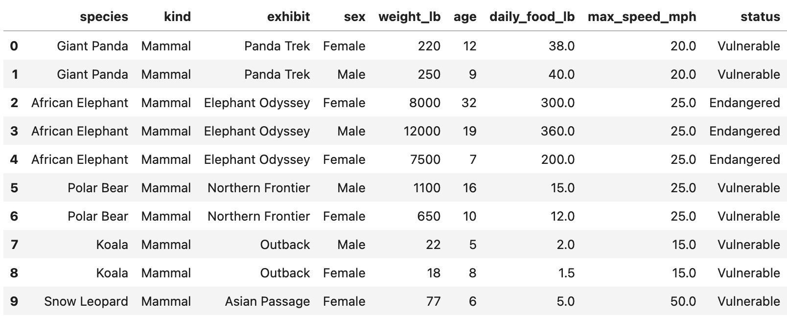

← return to practice.dsc10.com
Instructor(s): Peter Chi, Sam Lau
This exam was administered in-person. Students were allowed one page
of double-sided handwritten notes. No calculators were allowed. Students
had 3 hours to take this exam.
This exam covered
material from the Winter 2026 offering
of DSC 10.
Note (groupby / pandas 2.0): Pandas 2.0+ no longer
silently drops columns that can’t be aggregated after a
groupby, so code written for older pandas may behave
differently or raise errors. In these practice materials we use
.get() to select the column(s) we want after
.groupby(...).mean() (or other aggregations) so that our
solutions run on current pandas. On real exams you will not be penalized
for omitting .get() when the old behavior would have
produced the same answer.
We will work with a DataFrame called zoo containing
information about animals at the San Diego Zoo. Each row corresponds to
one animal. The DataFrame includes columns such as:
"species" (str): The species name
(e.g. "Giant Panda")."exhibit" (str): The exhibit where the
animal is housed."kind" (str): The animal’s class
(e.g. "Reptile", "Mammal",
"Bird")."weight_lb" (float): The animal’s weight
in pounds."age" (float): The animal’s age."status" (str): Conservation status
(e.g. "Endangered", "Vulnerable")."daily_food_lb" (float): Estimated pounds
of food consumed per day.A preview of zoo is shown below.

Assume we have already run import babypandas as bpd and
import numpy as np.
A silly capybara has scrambled up Jeffrey’s Python code! Unscramble
the code so that after it runs, jeffrey is a single string
containing the name of the exhibit with the largest mean reptile
weight.
Available lines (each may be used once, more than once, or not at all):
jeffrey = jeffrey.get(['exhibit', 'weight_lb'])jeffrey = jeffrey.get(['kind', 'weight_lb'])jeffrey = jeffrey[jeffrey.get('kind') == 'Reptile']jeffrey = jeffrey[jeffrey.get('species') == 'Reptile']jeffrey = zoojeffrey = jeffrey.loc[0]jeffrey = jeffrey.iloc[0]jeffrey = jeffrey.index[0]jeffrey = jeffrey.max()jeffrey = jeffrey.mean()jeffrey = jeffrey.reset_index()jeffrey = jeffrey.sort_values(by='weight_lb', ascending=False)jeffrey = jeffrey.sort_values(by='weight_lb', ascending=True)jeffrey = jeffrey.groupby('exhibit')For each of Lines 1–9, select a line from A–N such that the code
produces the desired result when run in order. Your code may not need
all 9 lines — use “Not used” for any remaining lines at
the end. Line 1 has been filled in for you
(E). Not all of the code above will be used, and some lines
may be used more than once.
State the correct sequence of line letters for Lines 2–7 (and indicate which of Lines 8–9 are not used).
Answer: Line 1: E (given). Lines 2–7: C, A, N, J, L, H. Lines 8 and 9: Not used.
Working code:
jeffrey = zoo
jeffrey = jeffrey[jeffrey.get('kind') == 'Reptile']
jeffrey = jeffrey.get(['exhibit', 'weight_lb'])
jeffrey = jeffrey.groupby('exhibit')
jeffrey = jeffrey.mean()
jeffrey = jeffrey.sort_values(by='weight_lb', ascending=False)
jeffrey = jeffrey.index[0]Filter to reptiles, keep exhibit and weight, group by exhibit, take mean weight per exhibit, sort descending so the first index is the exhibit with largest mean reptile weight.
Kate is the San Diego Zoo’s newest zookeeper! She creates the
DataFrames first_5 and first_7 using the code
below.
first_5 = zoo.take(np.arange(5))
first_7 = zoo.take(np.arange(7))(a) Kate’s first merge call is shown below.
merged_a = first_7.merge(first_7, on='species')How many rows does merged_a have? Write your answer as a
single number in the box, or select Not Enough
Information.
17
Not Enough Information
Answer: 17
In first_7, there are 2 giant pandas, 3 African
elephants, and 2 polar bears. Merging first_7 with itself
on species creates (2^2 + 3^2 + 2^2 = 17) rows.
(b) Kate’s second merge call is shown below.
merged_b = merged_a.merge(first_5, on='species')How many rows does merged_b have? Write your answer as a
single number in the box, or select Not Enough
Information.
35
Not Enough Information
Answer: 35
The merge from part (a) has 17 rows. Merging that result with
first_5 keeps only the pandas and elephants, giving (2^3 +
3^3 = 8 + 27 = 35) rows.
For this problem, let weight and age be
defined by:
weight = np.array(zoo.get('weight_lb'))
age = np.array(zoo.get('age'))(a) Avi wants to quickly estimate each animal’s weight in kilograms instead of pounds using the shortcut ( ).
Which of the following expressions output an array of the animal weights in kilograms using this shortcut? Select all that apply.
A. weight * 0.45
B. weight - 0.55
C. weight * 0.90 / 2
D. weight / 0.45
Answer: A and C
weight * 0.90 / 2 equals
0.45 * weight.(b) Michelle wants to find the
range of age, i.e., the age of the oldest
zoo animal minus the age of the youngest zoo animal.
Which of the following expressions incorrectly computes this value?
A. age.max() - age.min()
B. (age - age.max()).min()
C. (age.max() - age).max()
D. (age - age.min()).max()
Answer: B
age - age.max() is always non-positive, so
.min() gives the negative of the range, not the range.
Bianca is writing helper functions for the San Diego Zoo’s animal
tracking tools. Complete the code below so that mystery
returns a string made of the first letter of each word
in a species name. Then, Bianca can use blank (b) to
create bianca, a copy of zoo with one extra
column called initials. For example,
mystery("Giant Panda") should return "GP".
def mystery(value):
_____(a)_____
return result
bianca = zoo.assign(initials=_____(b)_____)(a) Which snippets could replace blank (a)? Select all that apply.
Snippet 1.
result = ""
for word in value:
result = result + word[0]Snippet 2.
words = value.split()
result = ""
for word in words:
result = result + word[0]Snippet 3.
temp = bpd.DataFrame().assign(word=value.split())
result = temp.get('word').get(0)Snippet 4.
words = np.array(value.split())
for i in np.arange(len(words)):
words[i] = words[i][0]
result = ''.join(words)Snippet 1
Snippet 2
Snippet 3
Snippet 4
Answer: Snippet 2 and Snippet 4
value, not words, so it does not produce initials.(b) Which snippets could replace blank (b)? Select all that apply.
zoo.get('species').apply(mystery)
zoo.apply(mystery).get('species')
mystery(zoo.get('species'))
zoo.mystery('species')
Answer: Only
zoo.get('species').apply(mystery) (the first option).
Apply mystery to each value in the species
column. The other options apply mystery incorrectly or call
a method that does not exist.
Sam has subsetted zoo to include only the animals whose
status is "Endangered". Suppose that in Sam’s
subset:
(a) What is the probability that a randomly selected animal from Sam’s sample lives in the Asian Passage but is not a mammal? Give your answer as a simplified fraction, or select Not Enough Information.
()
Not Enough Information
Answer: ()
Let (A) = mammal, (B) = Asian Passage. (P(B) = ), (P(A B) = ). Then (P(B A) = P(B) - P(A B) = - = ).
(b) Sam chooses two animals uniformly at random with replacement from his sample. What is the probability that at least one of the two animals is a mammal living in the Asian Passage? Give your answer as a simplified fraction, or select Not Enough Information.
()
Not Enough Information
Answer: ()
One draw: (P(A B) = ). Probability neither draw is that event: (()^2 = ). So (P() = 1 - = ).
Sofia gets a summer internship at the San Diego Zoo. Her first task
is to study the relationship between conservation status and how much
food an animal eats each day. She treats zoo as an SRS of
animals from zoos worldwide. Complete the code below so that
bootstrap(zoo) returns a 75% bootstrap confidence
interval for the statistic:
median daily food of Endangered animals − median daily food of Vulnerable animals.
def bootstrap(df):
vulnerable = df[df.get('status') == 'Vulnerable']
endangered = df[df.get('status') == 'Endangered']
median_diffs = []
for i in range(1000):
_____(a)_____
return np.percentile(median_diffs, _____(b)_____)(a) Which snippets could replace blank (a)? Select all that apply.
Resample row counts from the full df for each group
size, then take medians (samples from wrong population)
Resample vulnerable and endangered
separately with replacement, append difference of sample medians of
daily_food_lb
Build NumPy arrays of daily_food_lb per group,
np.random.choice each with replacement, append
np.median(sample_e) - np.median(sample_v)
None of the above
Answer: The second and
third options (bootstrap within each
status group, then difference of medians). The first samples from the
full df instead of within each group.
(b) Which expression should replace blank (b)?
75
87.5
[25, 75]
[12.5, 87.5]
[75, 25]
Answer: [12.5, 87.5] — use
np.percentile(median_diffs, [12.5, 87.5]) for the middle
75% (12.5% in each tail).
Assume Peter ran bootstrap code similar to lecture to bootstrap the
age column from zoo 5,000
times and stored the median of each bootstrap sample in
ages5000. He then bootstraps the median age
1,000 more times and stores results in
ages1000:
>>> ages1000
array([5, 9, 12, ..., 16, 19, 12], shape=(1000,))
>>> ages5000
array([12, 7, 13, ..., 11, 11, 16], shape=(5000,))(a) Suppose Peter creates a 95% bootstrap
confidence interval using ages5000. Select
all true statements about this interval.
The total width can be calculated using the CLT as in class, without bootstrapping.
The midpoint equals np.median(zoo.get('age'))
exactly.
This interval estimates the median age of animals in all zoos even if San Diego Zoo is a nonrandom sample of that population.
If Peter’s target population is only animals in the San Diego Zoo, this interval isn’t useful.
None of the above
Answer: Only the fourth statement.
zoo is the entire SD Zoo census, the population
median is known — no CI needed (fourth true).(b) Select all true statements
about ages5000 and ages1000.
Because ages5000 has more bootstrap medians, its
variance should be smaller than
ages1000.
A 95% CI from ages5000 will be narrower
than one from ages1000.
The variances of the two arrays should be similar (same statistic, same original sample).
The variances might not be exactly equal because bootstrap resampling is random.
None of the above
Answer: The third and fourth statements.
More resamples improve Monte Carlo accuracy of percentiles but do not systematically change the variance of the bootstrap distribution of the statistic (first and second false).
Raymond wants to estimate the average daily food
consumption (pounds) of animals at the San Diego Zoo. He runs
my_sample = zoo.sample(30). His sample consumes
1200 pounds of food per day in total,
with a sample standard deviation of approximately
88.
Use ( ) where hints suggest.
(a) A 95% CLT-based confidence interval for the average daily food can be written as ([x,, 9x]) where (x > 0). What is (x)? (Simplified fraction or whole number, or Not Enough Information.)
8
Not Enough Information
Answer: 8
Width (= 9x - x = 8x). For 95% CLT, width ( = 64), so (8x = 64 x = 8).
(b) Let (z > 0) so that some normal tail fraction uses (z) SDs. With the same sample, Raymond makes a valid CLT-based CI whose right endpoint is () times the midpoint. What is (z)? (Simplified fraction or whole number, or Not Enough Information.)
(Hint: ( ).)
()
Not Enough Information
Answer: ()
Sample mean (= 1200/30 = 40). Right endpoint ( = 50), so margin (= 10 = z 16z), hence (z = 10/16 = 5/8).
(c) Ella takes an SRS at another zoo and builds a 95% CLT interval for average daily food. Raymond uses 90% with his SD Zoo sample. Ella’s interval is narrower than Raymond’s. Select the best explanation.
No. A smaller confidence level results in a narrower confidence interval.
Yes. A smaller confidence level results in a wider confidence interval.
Yes. Ella might have a smaller sample size than Raymond.
Yes. Ella’s sample might have a smaller standard deviation.
Answer: Yes — Ella’s sample might have smaller standard deviation.
A lower confidence level tends to narrow an interval, but Ella’s interval can still be narrower at 95% than Raymond’s at 90% if her SD (or (n)) is much better.
(d) Assume 12,000 animals at the SD Zoo. If a CLT interval for the average daily food is ([a, b]), what is the interval for total daily food?
([30a, 30b])
([,a,, ,b])
([12000a, 12000b])
([a + 12000,, b + 12000])
Cannot be determined
Answer: ([12000a, 12000b]) — multiply both endpoints by population size (N).
Punch is a baby Japanese macaque; zookeepers recorded his last 50 interactions (20 friendly). For a typical macaque, 50% of interactions are friendly. Minchan tests whether Punch is treated worse (fewer friendly) using:
Assume total_variation_distance(dist1, dist2) computes
TVD as in class. Code skeleton:
A. expected = 50 * 0.5
B. obs = abs(20 - expected)
C. stats = np.array([])
D. for i in np.arange(1000):
E. n = np.random.multinomial(50, [0.5, 0.5])[0]
F. stat = abs(n - expected)
G. stats = np.append(stats, stat)
H. p_value = np.count_nonzero(stats >= obs) / 1000(a) If Minchan runs the code unchanged, select all true statements.
A histogram of stats would be centered at 0.
A histogram of stats would have a peak at 5.
p_value is approximately twice what it
should be for the stated one-sided alternative.
p_value is more than twice what it
should be.
None of the above
Answer: Only the third statement —
using abs makes the test effectively two-sided, roughly
doubling the one-sided (p)-value.
(b) Line B should be:
Left as-is
obs = 20 - expected
obs = 20 / 50 - expected
obs = abs(20 / 50 - expected / 50)
obs = total_variation_distance([0.4, 0.6], [0.5, 0.5])
Answer: obs = 20 - expected (one-sided:
count friendly minus expected under null; no abs).
(c) Line E should be:
Left as-is
n = np.random.choice(['Friendly', 'Unfriendly'], 50)
n = np.random.multinomial(20, [0.5, 0.5])[0]
n = np.random.multinomial(50, [0.4, 0.6])[0]
n = np.random.multinomial(50, [0.5, 0.5])
Answer: Left as-is — multinomial ((50, [0.5, 0.5]))
and take [0] for count of friendlies under the null.
(d) Line F should be:
Left as-is
stat = obs
stat = abs(n - 20)
stat = total_variation_distance([n/50, 1 - n/50], [0.5, 0.5])
stat = n - expected
Answer: stat = n - expected (match the
observed statistic without abs).
(e) Line H should be:
Left as-is
np.count_nonzero(stats >= obs) / 50
np.count_nonzero(stats <= obs) / 50
np.count_nonzero(stats <= obs) / 1000
Answer:
np.count_nonzero(stats <= obs) / 1000 — one-sided
alternative “less than 0.5” means more extreme = smaller or equal
stat; divide by number of simulations.
Austin tests whether mammals and
birds have the same proportion of
“fast” animals (max speed > 40
mph). He uses a DataFrame df with:
kind: "Mammal" or
"Bird".is_fast: True if max speed > 40 mph,
else False.df keeps only rows of zoo where
kind is Mammal or Bird. Assume df is
representative of all mammals and birds for inference where stated.
(a) Select all valid statements of the null hypothesis for Austin’s permutation test.
The distribution of is_fast is the same for mammals and
birds.
The proportion of fast animals is the same among mammals and birds.
The proportion of fast animals among mammals and birds in
df is the same.
The average maximum speed is the same for mammals and birds.
There is no association between kind and
is_fast.
The proportion of fast animals among both groups is 0.5.
None of the above
Answer: First, second, and fifth — population-level “same distribution / same proportion / no association.” Not “in df only,” not speeds, not 0.5.
(b) Select the valid alternative hypothesis.
Proportion of fast mammals minus proportion of fast birds ().
The distribution of kind differs for fast vs non-fast
animals.
The proportion fast among both groups is not 0.5.
None of the choices above are valid.
Answer: First — difference in proportions () (two-sided). Others are wrong conditioning or wrong null value.
(c) Select a valid test statistic for this test.
Proportion of fast mammals minus proportion of fast birds (signed).
TVD between distribution of kind among fast vs non-fast
animals.
Absolute difference between number of fast mammals and fast birds.
None of the choices above are valid.
Answer: None of the choices above are valid — for a
two-sided test on proportions you need a symmetric
statistic (e.g. absolute difference in proportions or TVD on
is_fast by kind); signed difference is for
one-sided; other options are wrong per exam solution.
(d) Correct way to simulate under the null:
Shuffle the kind column and recompute the statistic.
Resample rows of df with replacement.
For each row, flip a fair coin for is_fast.
Separately resample mammals and birds with replacement.
Answer: Shuffle kind — permutation test
breaks association under “same distribution.”
(e) Consider
def stat(tbl):
props = tbl.groupby("kind").mean().get("is_fast")
return np.std(props)Using stat as the test statistic with 1,000 null
simulations, select all true statements.
The empirical distribution is symmetric about 0.
The distribution has a peak at 0.
The distribution contains negative values.
stat(df) is a valid observed statistic for this
two-sided test.
Same shuffles () same (p)-value as absolute difference in proportions.
Same shuffles () same (p)-value as TVD between is_fast
distributions by kind.
None of the above
Answer: Second, fourth, fifth, sixth — (([p_m, p_b]) = |p_m - p_b|/2), nonnegative, peak near 0 under null; proportional to abs diff and TVD for binary groups.
(f) Austin wants a 95% CLT interval for the proportion of mammals that are fast, with width at most 0.1 for any true proportion. Minimum number of mammals to sample?
400
Not Enough Information
Answer: 400 — worst case (p = 0.5):
width ( = 2/ n ).
Hemanth fits a regression line predicting daily_food_lb
from weight_lb:
[ = 0.04 + 2 ]
Given: (r = 0.8), mean of weight_lb is
200, SD of weight_lb is
100, SD of daily_food_lb is
5.
(a) Select all statements that must be true.
About 80% of points fall on or near the regression line.
Some other line could have a lower average squared residual than this line.
No bootstrap resample can reproduce exactly this regression line.
None of the above
Answer: None of the above — (r=0.8) is not “80% on line”; OLS minimizes MSE; bootstrap could repeat rows.
(b) What is the mean of daily_food_lb?
(Single number.)
Answer: 10 — line passes through ((x,
y)): (0.04 + 2 = 10).
(c) Convert both variables to kg
((1) lb () kg) and refit predicting daily_food_kg from
weight_kg. Compared to the original line, does each
increase, decrease, or stay
the same?
Answer: Slope same, intercept decreases, r same — same linear relationship; both axes scaled by 0.45 leaves slope and (r); intercept scales with (y).
(d) Standardize weight_lb only, then
refit predicting daily_food_lb. Compared to the original
line, does each increase, decrease, or
stay the same?
Answer: Slope increases (equals (r SD_y) in (SD_y) per 1 SD (x), i.e. (0.04 = 4)), intercept increases to (y = 10), r same.
(e) Bootstrap 1000 times; each time predict
daily_food_lb for 150 lb and 400
lb animals. For which weight will the 1000 predictions
vary more?
150 lb
400 lb
Equal variation
Need more information
Answer: 400 lb — lines pivot near ((x, y)); farther from (x = 200) means higher variance of fitted value.
Congratulations on finishing DSC 10! Before you turn in your exam:
If you’d like, you may draw a picture about DSC 10 in the space provided on the paper exam.
(This question is not graded.)
(No graded solution.)